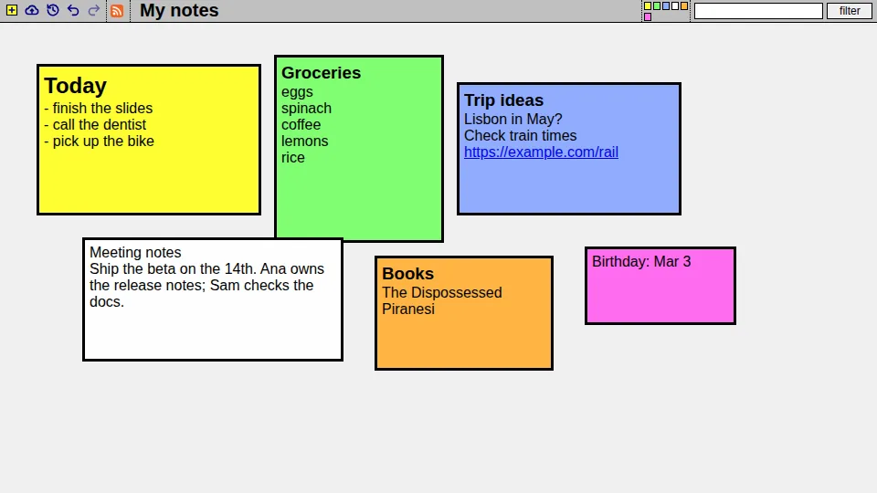

Webnote
Sticky notes in your browser.
Recently opened in this browser
What is Webnote?
Webnote is a page of sticky notes. Use it to jot something down in a meeting or class, keep a to-do list, or lay out ideas on one screen where you can see them all at once.

Each workspace has a name. Open it from any computer by name, or send the link to someone to share it. There's no account to make.
Why not a wiki? A wiki is good for lots of linked text. Webnote is for arranging a handful of notes visually, on one page.
Using a workspace
- New note: the + button in the toolbar.
- Edit: double-click a note. Click outside it or press Esc when you're done.
- Move: drag a note. Resize: drag its edge.
- Color: hover over a note and press 1 to 8.
- Delete: the × in a note's corner.
- Save: the cloud button. Nothing is saved until you press it; the page warns you if you try to leave with unsaved changes.
- Undo and redo: the arrow buttons.
- History: the clock button lists earlier saves; pick one to open it.
Workspaces need a mouse or trackpad; touch screens aren't supported yet.
Tips and shortcuts
Keyboard (when you're not editing a note)
- 1–8: color the note under the mouse.
- N / P: bring the next or previous note to the front.
- Arrow keys: move the front note.
- Alt+P: new note, ready to type in. Alt+O: edit the front note. Alt+S: save.
- While editing: Esc stops editing, Alt+D deletes the note.
- B: adds a note with a bookmarklet. Drag its link to your bookmarks bar, then select text on any page and click the bookmark to add it to this workspace as a note.
Mouse
- Alt+drag: resize a note from anywhere on it.
- Ctrl+drag: move all the notes of that color together.
- Alt+right-click: send a note to the back.
- Ctrl+Alt+drag: select text in a note instead of moving it.
- The small squares in the toolbar stand for your notes. Click one to bring its note to the front, Ctrl+click to bring all notes of that color forward, or Shift+click to show only that color.
Text and filtering
- Start a line with
!,!!or!!!for a small, medium or large heading. - Web addresses become links.
- The filter box at the top right takes a regular expression, like
todo|later, or a color, likecolor:yellow. Matching notes come forward and the rest fade.
Saving, history and feeds
Every save keeps a snapshot of the whole workspace, and the clock button lists them so you can open an older one.
Snapshots are deleted two years after they're saved. Save a workspace at least once every two years to keep it.
Each workspace has an RSS feed of its notes: the feed button in the
toolbar, or /webnote/NAME.xml.
Privacy and sharing
There are no accounts or passwords. A workspace's name is its only key, so anyone who knows or guesses the name can read and change it. Treat every workspace as public.
- Pick a long, hard-to-guess name for anything you'd rather keep to yourself, and share the link only with people you trust.
- Don't put passwords, financial details or anything else sensitive in a note.
- If someone changes your notes, the history still has your earlier saves.
Questions
Which browsers work?
Current versions of Chrome, Edge, Firefox and Safari on a computer.
Does it cost anything?
No. Use it for anything legal.
Can I run my own copy?
Yes. The source is on GitHub, and it runs on Google App Engine.
I found a bug.
Please open an issue on GitHub or email webnote@ponderer.org.